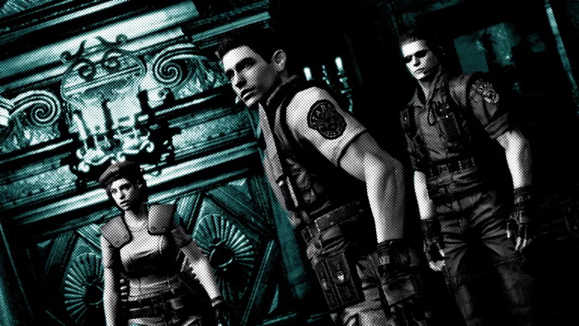

The ultimate guide to getting into the Resident Evil games
By Andy Kelly 6 days ago
The best way to play Capcom's sprawling survival horror series.

(Image credit: Capcom)
First off, don't worry about playing the Resident Evil games in order.
It's a wildly inconsistent series, and it's not worth enduring the bad
games (of which there are many) to get to the good ones. Instead,
focus on the gold. If I've put a game in the must play category, you
should make it a priority. If it's under maybe play, it's a good game,
but not essential. And avoid speaks for itself. If this is your first
stab at Capcom's long-running survival horror series, the route I've
laid out below will ensure you experience it at its best.
PLAY FIRST
Resident Evil 2 Remake (2019)

(Image credit: Capcom)
This is currently the best possible introduction to Resident Evil for
a new player. It features all the elements that have come to define
the series: namely tense survival horror, puzzle solving, item
management, claustrophobic environments, and groaning, brain-eating
zombies. But it presents it all in a supremely playable, modern way.
This is one of the nicest feeling Resident Evil games, with snappy,
responsive controls and a general air of polish throughout.
Set almost entirely in a grand old police station that used to be an
art gallery, it follows two playable characters, Leon S. Kennedy and
Claire Redfield, as they fight to survive a zombie outbreak in Raccoon
City. It's a slow, methodical survival horror game, with incredible
lighting that makes every corridor of the RPD building drip with
atmosphere. From the gleaming marble of the entrance hall, to the
warrens of messy back offices, flooded and lit by flickering bulbs,
this is one of the best realised (and scariest) Resident Evil
settings.
Added to that, the puzzles are well designed and satisfying to solve,
and the over-the-shoulder combat is superb. Zombies react to your
bullets in a wonderfully kinetic, dynamic way, tumbling down stairs,
falling into each other, and crawling after you if you shoot their
legs off. And then there's the Tyrant (also known as Mr. X), a giant
bioweapon in a hat and trenchcoat who hunts you relentlessly, and
whose pounding footsteps will have your heart racing.
MUST PLAY
Resident Evil HD Remaster (2002)

(Image credit: Capcom)
This remake of the first Resident Evil is the best way to experience
the original story. It retains the fixed camera angles and challenging
survival horror of the 1996 game, but with vastly improved visuals and
smoother controls. Playing as either Chris Redfield or Jill Valentine,
you're trapped in an isolated rural mansion infested with zombies,
searching desperately for a way to escape.
The real star is the Spencer Mansion itself, which remains one of the
very best Resident Evil settings. This dusty old manor is stuffed with
hidden passages, arcane puzzles, and dark secrets. Building a mental
map of its maze-like layout as you play, backtracking and steadily
unlocking more of it—all while dodging shambling zombies (and
worse)—is the quintessential Resident Evil experience.
The PC version is based on a GameCube game from 2002, so the
pre-rendered backgrounds aren't as crisp as you might hope for on a 4K
monitor. But the quality of the art direction, and the powerfully
gloomy atmosphere, make up for its technical shortcomings. This remake
also expands on the original, including the addition of the terrifying
Crimson Heads: zombies that can only be permanently killed with fire.